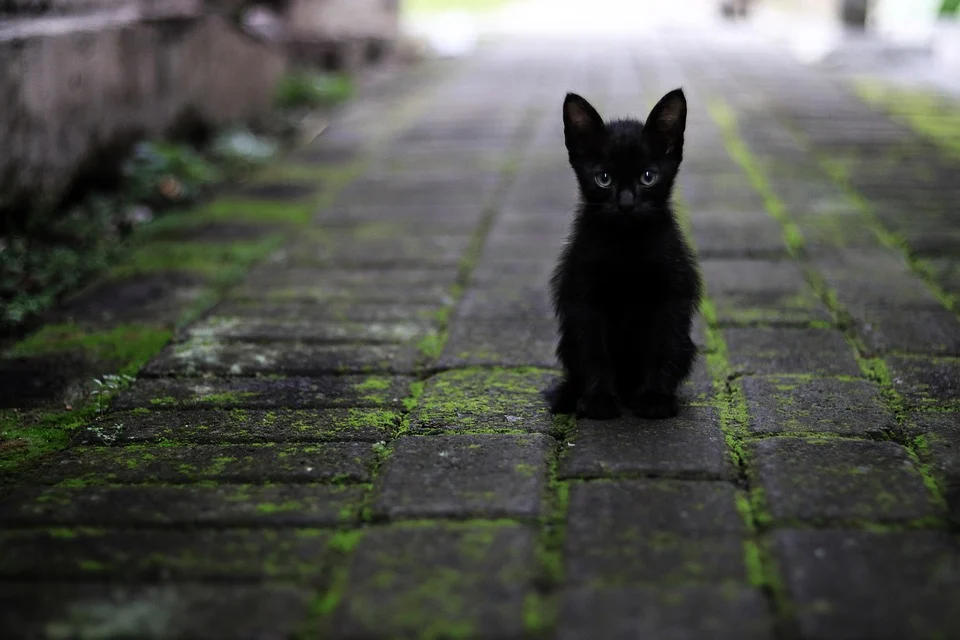

3. EL ARENERO:
Los gatos son muy limpios. Por esto el arenero debe ser grande, descubierto y limpiarse a diario. La arena debe ser confortable y el número de areneros 1 o 2 por cada gato. Orinar fuera de la bandeja puede indicar que algo en el arenero o en nuestro felino
no va bien. Muchas veces es estrés, recuerda: ¡los gatos no son vengativos!
4. LA MALTA:
Los gatos son animales que se acicalan a diario. Si dejan de hacerlo debemos sospechar que algo no va bien en nuestra mascota. Puede tratarse de algún dolor en la boca o de alguna patología sistémica. Los gatos de pelo largo en las épocas de muda quizá
necesiten administraciones de malta. Pero no hay que confundir intentar expulsar bolas de pelo con el asma felino, una patología muy frecuente en ellos
5. EL JUEGO:
Los gatos desde pequeños son animales curiosos, intrépidos y grandes cazadores. Con su domesticación es una práctica que no muchos realizan a diario, sobre todo los gatos indoor. No te olvides de estimular a tu mascota. Podemos utilizar un
láser o fabricar juguetes caseros. ¡Nunca tus manos! Utiliza tu imaginación, pero siempre debemos conducir el juego a un premio. Algo que simule lo que él cazaría en el exterior, es suficiente con un poco de comida.
6. LA CURIOSIDAD MATÓ AL GATO:
Los gatos indoor se aburren en el sofá y les llama la atención lo que ocurre en el exterior. Por ello muchos deciden asomarse y saltar al vacío. Esto es lo que los veterinarios llamamos “gato paracaidista”. Una urgencia que la mayoría de veces
acaba en desgracia, así que, ¡cuidado con las ventanas!
6. NO LO DEJES SOLO
Nunca dejes solo a tu perro, en ningún lugar, mucho menos en un coche durante las horas centrales del día. Si no te queda más remedio y debes dejarlo solo en casa, procura que no sea demasiado tiempo. Existen, si no puedes dejarlo en compañía de otra
persona, piensa en las opciones que tienes. ¡Siempre hay una alternativa!
7. ENRIQUECIMIENTO AMBIENTAL:
Mientras tú has estado todo el día fuera de casa trabajando, tu gato ha pasado la mayor parte del tiempo descansando. Esto hace que muchos de ellos se activen durante la noche y te molesten al dormir. Para evitar esto debes facilitarle juguetes
que estimulen su inteligencia. Puedes proporcionarle estanterías a diversas alturas y esconder algunos premios antes de irte de casa ¡que se divierta!
8. EL RASCADOR:
No te enfades si ves que tu gato se afila las uñas en el sofá. Piensa que ellos en libertad lo harían en un tronco de árbol, sólido y fuerte. La mayoría de los rascadores son bonitos pero inestables y eso a ellos les asusta.
9. ¿GATO O PLANTAS?:
Los gatos en el exterior ingieren diariamente hierba que facilitan su tránsito. En casa sustituye esta hierba por plantas, y muchas de ellas son tóxicas para ellos. Debemos proporcionar a nuestro gato hierba gatera y colocarla lejos del resto de plantas.
